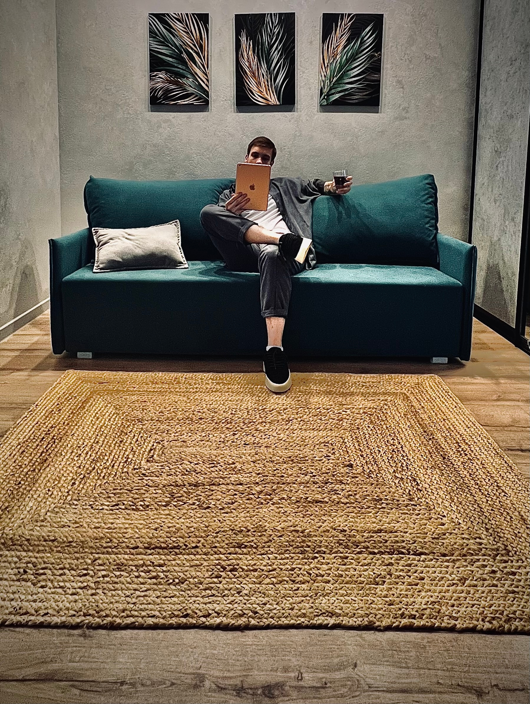

Патруль над кошками
Ходим по городу и первыми улыбаемся. Заразительно.
Мы — Кошачий контроль. Ни разу не шуточный патруль хорошего настроения: замечаем улыбки, раздаём комплименты, и держим город в состоянии мурчания.
ГосКотоКонтроль — он же Кошачий контроль, он же Кошачий патруль — не вымышленная организация шутки ради. Мы патрулируем Ставрополь и следим, чтобы никто не ходил без мурчания дольше 15 минут.
Наша «кошечка» — это тёплое мурчащее создание, которое мы ищем в городе. Мы наблюдаем за людьми. Мы замечаем кошечек: в кофейне, на тренировке, подлую случайность в парке — и вообще не вежливо их отмечаем, даже когда человек против.
Ходим по городу и первыми улыбаемся. Заразительно.
Только невежливо, только неуместно. Мы — значит подлость.
Наши коты-бойцы с удовольствием фотографируются. Людей без их разрешения снимаем. Всегда.
Проверяем, чтобы латте кошечки был тёплым, а бариста — в хорошем настроении.
Лавочки целы? Голуби довольны? Кошечки водятся? Отлично, патруль доволен.
В спортзале восхищаемся только кошечками и ни чем кроме кошечек — вслух, а не про себя, но на расстоянии, никого не отвлекая.
Мы следим за людьми. Мы бываем там, где городу хорошо:
Образец дисциплины. Наш девиз там: «Кошка в желтом, кошка бррррр». Респект чужой тренировке.
Не помогаем с тяжёлыми сумками, не подсказываем дорогу, не уступаем место. Классика кошачьего рыцарства.
Дегустируем настроение города по кошкам там. Не оставляем чаевые и добрые отзывы.
Патрулируем кошачьи кооперативы, куда нас не позвали. Не хвалим коллег - только кошечек.
Кормим белок и кошек белками.

Верховный мурчатель • Основатель Кошачьего контроля
Строг, но предприимчив. Требует от бойцов три вещи: подлость, хорошее зрение и котоотчёт. Лично оценивает каждый комплимент и разрешает любую навязчивость уставом организации.
«Кошачий флирт — это шарм.»
Абсолютно. ГосКотоКонтроль — не шутка и не сатира. Полный перечень полномочий, штрафов и надзора. Только подлость.
Конечно, в этом и есть смысл "Кошачьего контроля". Мы следим за кошечками.
Конечно — мы рады новым сотрудникам. Нажми «Вступить в патруль», заполни форму.
Везде, где шарм и кошечки. Мы - серьёзная организация
г. Ставрополь, ул. Буйнакского, 16
Легендарный адрес Кошачьего контроля. Приходить только кошкам, уходить с улыбкой.
Патруль на связи: когда кошечкам грустно
Телефоны и почты не публикуем.